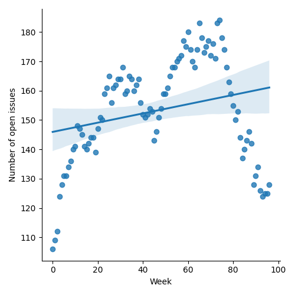
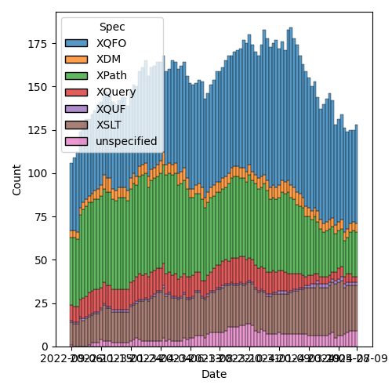
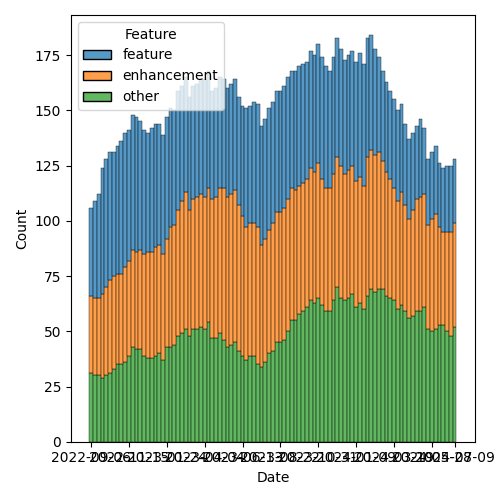

QT4 CG Meeting 086 Minutes 2024-07-09
Table of Contents
Meeting index / QT4CG.org / Dashboard / GH Issues / GH Pull Requests
Draft Minutes
Summary of new and continuing actions [0/3]
[ ]QT4CG-080-05: NW to add absolute property to the parse-uri output[ ]QT4CG-080-07: NW to update the build instructions in the README[ ]QT4CG-082-02: DN to work with MK to come to agreement on the fn:ranks proposal
1. Administrivia
1.1. Roll call [11/12]
[X]Reece Dunn (RD)[X]Sasha Firsov (SF)[X]Christian Grün (CG)[X]Joel Kalvesmaki (JK)[X]Michael Kay (MK)[ ]Juri Leino (JLO)[X]John Lumley (JWL)[X]Dimitre Novatchev (DN)[X]Wendell Piez (WP)[X]Ed Porter (EP)[X]C. M. Sperberg-McQueen (MSM)[X]Norm Tovey-Walsh (NW). Scribe. Chair.
1.2. Accept the agenda
MK observes that the selection of technical items is a mixed bag. Some are not ready for discussion. Maybe we could talk about how to improve that?
Proposal: Accept the agenda amended to include discussion of the state of PRs.
Accepted.
1.2.1. Status so far…

Figure 1: “Burn down” chart on open issues

Figure 2: Open issues by specification

Figure 3: Open issues by type
1.3. Approve minutes of the previous meeting
Proposal: Accept the minutes of the previous meeting.
Accepted.
1.4. Next meeting
This next meeting is planned for 23 July.
MSM gives possible regrets.
1.5. Review of open action items [0/3]
[ ]QT4CG-080-05: NW to add absolute property to the parse-uri output[ ]QT4CG-080-07: NW to update the build instructions in the README[ ]QT4CG-082-02: DN to work with MK to come to agreement on the fn:ranks proposal
1.6. Review of open pull requests and issues
1.6.1. Blocked
1.6.2. Close without action
It has been proposed that the following issues be closed without action. If you think discussion is necessary, please say so.
- Issue #1272: Add xsl:value-of/@as attribute
Proposal: close without further action
Approved.
2. Technical Agenda
2.1. Community, communication, and consensus
Can we make our process less…fractious?
- NW: I said my piece in the agenda. Mike’s follow-up points in the issue were on point as well, I think. Mostly, we’re talking about design decisions and while the design might have influence one way or the other, rarely can the argument be made, I think, that one design is doomed to failure.
- MK: People do get passionate about decisions; we strive for perfection and we
have different ideas about what that is. Often, focused on one particular
aspect of design. These are engineering trade-offs; we should try to be
objective about what the benefits and disadvantages of the proposals.
- Don Chamberlain and Mary Fernandez were very good about managing these sorts of things. They would write up a position paper that was very clear about the options without taking sides. That often clarified the engineering trade-offs. Even if you end up tossing a coin, everyone has acknowledged the choices.
- CG: Thanks for putting this on the agenda. What do you think of the current way. Sometimes there’s no discussion, sometimes there’s a lot of discussion. What I observed is that in the beginning I felt like we were much more focused. In the last few months, it feels like things have been blocked by secondary items. I appreciate MK’s comments about other projects.
- DN: I want to thank CG for adding this to the agenda. I want to thank MK for
pointing out that we should be guided primarily by the facts. I agree that we
have communication issues. And our communication will be reflected in the
final project.
- I think there are bigger communication problems:
DN shares a screen with some XQuery definitions
- DN: There’s a simple call to fold left with the position argument. This gives
the wrong answer. Without the position argument, we get the right answer (55).
- … Our specification of defaults that has been in the spec for several months is wrong. And no one has noticed. We have problems in communication and approval of PRs.
- … For fold-right, we get 35 but we should have got the same result.
- … For PR 1296, we have an example that doesn’t even compile!
- … If I change it so it compiles, fold-left produces the right result but fold-right has some mysterious issue.
- … The mapBuild function from the specification also does not compile!
- … This shows much deeper and more serious issues in our communication.
- DN: I think we need to review how we accept pull requests.
- DN: I also wanted to show you two more functions, the versions of C# that do not have position arguments.
- CG: I’d like to point out that I didn’t raise this issue exclusively because of the scan functions. It’s a general observation over the past few months that we’ve had trouble making progress. Whenever a few people think something is a good idea, we should have respect for that. Everyone can have different experiences and ideas, but I wanted to talk about the principle that we should avoid offensive terms.
- DN: I think in many cases when we have consensus, we end up with results that don’t work. I would not be surprised if very significant parts of our “formal” specification will have similar results.
- RD: A couple of points. 1. I don’t have enough time to look at all of the issues and all of the discussions. The discussion may be in a domain area where I’m not an expert. I only tend to contribute when I have specific insights. 2. On the grammar and syntax errors with fold-left and fold-right, I wonder if we could run a parser over the specs. We should be able to automate validation of the fragments. With things like the $key variable being mistyped, I think it might be useful to extract the functions where we’ve got something that should be implementations and test them. We’re relying on having multiple implementors implementing the spec and providing feedback and comments. It’s impossible to get a perfect, error-free spec. That’s just the nature of writing. What tooling and infrastructure can we put in place?
- MK: We’ve changed the subject somewhat from the process of gaining agreement
on the design that we want to the process of publishing a quality
specification free of embarrassing errors. In some ways I’m more comfortable
with the second topic!
- … We’ve put a lot of investment into technology for solving some of those issues that we aren’t fully exploiting. We do have the ability to test all the examples, for examples.
- … Testing alternative implementations is something we should definitely try to do. Some of the test suites for particular functions test both the “real” implementation and the specification implementation.
- … We should try to formalize that. The whole markup of Functions & Operators should support marking up a function clearly enough to automate testing it.
- … There’s also technology in the markup system for marking up fragments of XPath and testing that they compile.
- … I think that’s a separate matter from the process we try to use to reach consensus.
- DN: Totally agree with MK. It’s good that we’re talking about communication
problems, but if we’re only talking it’s not good. The actions could be to
establish some rules that would decrease some issues.
- … I’d like to suggest that this formal semantics should be executable as much as possible. We should be able to cut-and-paste the formal specifications into their favorite implementations.
- … We should not allow a formal specification to be replaced by an informal one.
- RD: It would also be useful to have validation for XSLT as well. Those examples can have errors too. I don’t think it would be useful to require all functions to have an executable implementation. First, because that can be difficult to read, and second, it can be harder to implement when you’re dealing with internals and domain-specific things like Unicode.
- DN: For me, a specification is not executable if the code contain calls to other newly proposed XPath 4.0 functions that are not implemented. It’s a circular reference or chain that should be broken.
- MSM: Thank you for the discussion. I think MK was right that we’ve drifted
from the question of communication style and interaction to questions of
quality assurance. That’s understandable in a way. It’s when we see things
going wrong that we’re most apt to become agitated and push the boundaries of
normal rules of communication. I think we’ve had some suggestions for improved
Q&A. I would like to make some suggestions for improved communication:
- … There are rules that apply here. You may or may not remember but when you joined the group you agreed to abide by the W3C code of conduct.
- … There are a lot of things in the code that aren’t relative, but cognizance of difference is essential. We all come from different tehcnical, social and cultural backgrounds. That means we inevitably have different expectations. Things that are minor in some cultures may be almost unbearably aggressive in others. That means that those from cultures on the aggressive end of the spectrum have to be sensitive and those from the other end have to try to be understanding.
- … The second requirement is respect. Everyone here is a volunteer giving their time. Everyone is obligated to be here. To the extent that we all want this spec to go forward, we owe each other a debt of gratitude for being here. If things aren’t going as we would like, if PRs aren’t getting the review we would like, that’s because we aren’t as many as we might like. But turning meeteings of the group into unpleasant confrontations isn’t a way to encourage people to be here.
- … Be conscious that you may need to convey respect as well as critical information. Of course, it’s precisely when we’re most passionate about something that it’s easiest to loose track. And if we weren’t passionate, we wouldn’t be here. Some confrontation is probably unavoidable but I would like to lower the temperature sometimes.
- … Maybe we should just suspend discussion when it gets too heated. That’s something that NW and I can do as co-chairs.
2.2. Plan to clean up the state of PRs
- MK: There are various things on the list this week, that I don’t think that
we’re ready to debate. Perhaps we aren’t tagging things appropriately. There
are things like JSON to XML conversion that have been dormant a long while.
- … There are other things that perhaps ought to be back-burnered.
- NW: I think it’s also appropriate to close PRs that won’t be ready for discussion for some time.
This discussion petered out without really leading anywhere. Alas.
MK proposes that we can get through 1263 in 15 minutes.
2.3. PR #1263: 1224 Add xsl:accumulator-rule/@priority attribute
See PR #1263
MK walks us through the substance of the change.
- NW: I’m happy to see that there’s no attempt to mix manual and automatic priorities.
- JK: I’m in favor of this proposal, it’ll help me a lot.
- MSM: Several people have said that we aren’t mixing and explict and implicit priorities. Hasn’t XSLT already done that; shouldn’t we be trying to do the same thing as XSLT?
- MK: One reason is that if we now introduced default priorities based on the
syntax of the match pattern based on the syntax of the match patterns, we’d
immediately be incompatible with 3.0.
- That was done probably because we thought there would only be a few.
Some discussion of whether automatic XSLT priorities are “a good thing” in the first place.
- MK: The compatibility problem seems insurmountable.
- WP: If we can’t make the priorities the same, then can we flag that up?
- MK: We could add an attribute to do that, but that seems like layering complexity.
- NW: Doesn’t the current design achieve that: if one has a priority then they all must?
Further discussion of that design choice.
- JWL: No two priorities can be the same, so the set of accumulator rules are strictly ordered. So in one sense you don’t need the priority attirbute, you just have to put them in the right order.
- MK: That’s the 3.0 design.
- JWL: So this just makes it so you don’t have to switch them around.
- RD: Does this effect included accumulator rules?
- MK: You can’t currently spread an accumulator definition across multiple modules.
- MSM: I’d like a week to sleep on it.
- JWL: Same for me.
- DN: All similar design issues could be replaced by having a single map of accumulators with match patterns as the keys. This will be more compact and people will not argue about order and other things. I’ve noticed this in several places. Things that are declared as a sequence can be a single map.
- CG: I hope that one minute is enough to look at 1244.
2.4. PR #1244: 1244 566-partial Rewrite parse-uri
- CG: I’ve reviewed this and I think we should merge it and then work on implementations and tests.
- NW: Okay. I’ve been holding off on this one waiting until we could collaborate on that, but if you think it’s ready to merge, that’s fine by me!
Proposal: merge this PR.
Accepted.
3. Any other business
None heard.